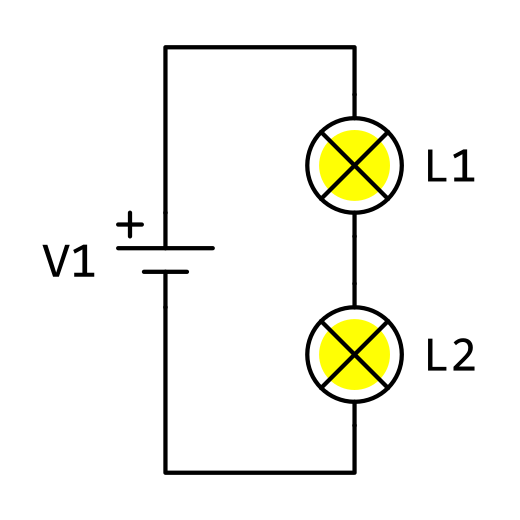
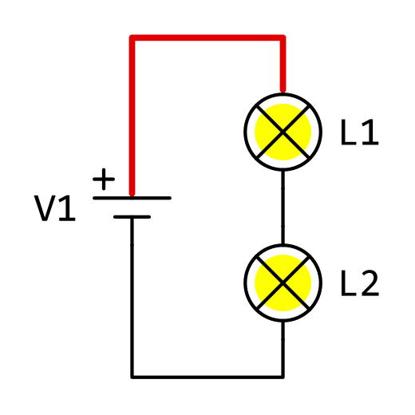
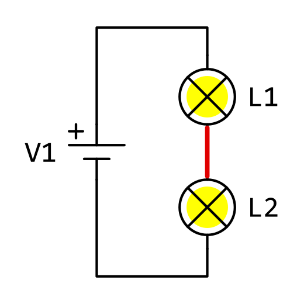
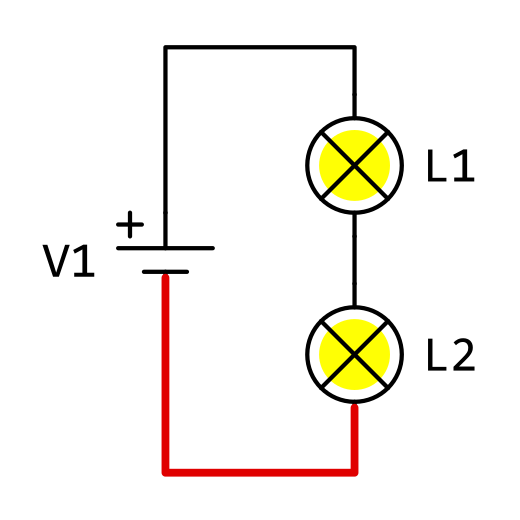
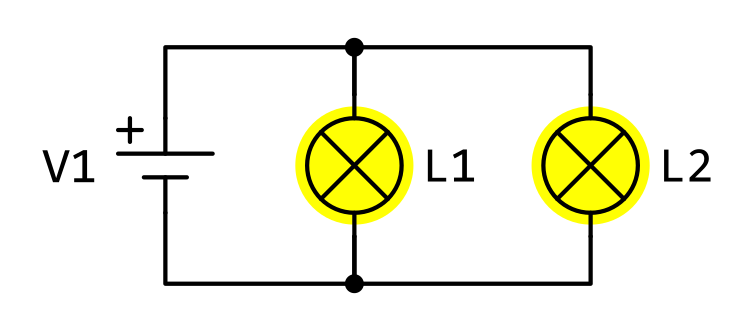
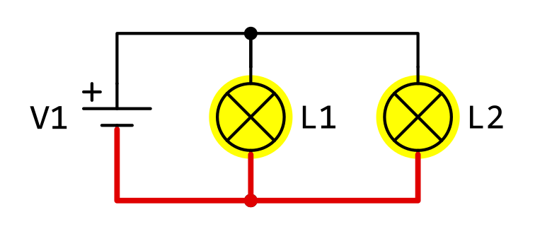
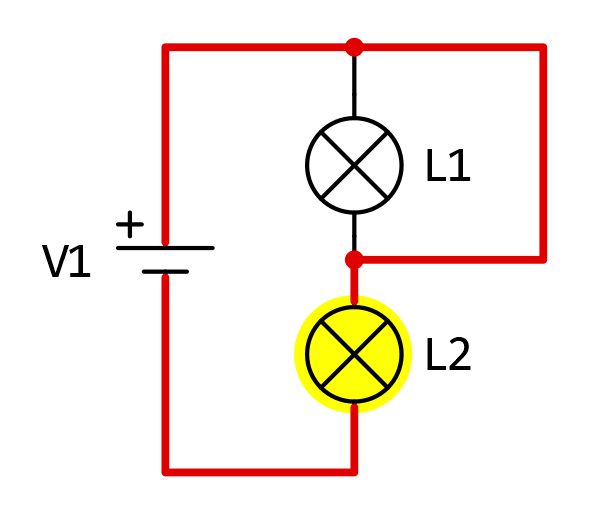
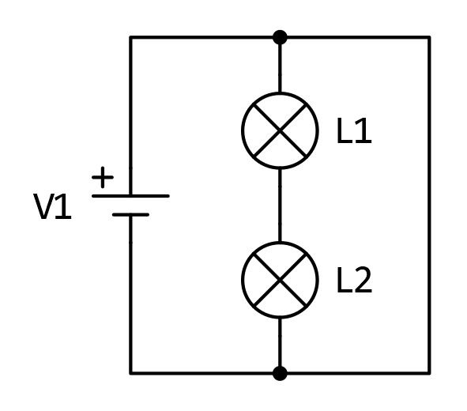

Serie y paralelo¶
Los circuitos eléctricos pueden conectarse de muchas maneras posibles. Las conexiones más simples son la conexión en serie y la conexión en paralelo. Combinando ambas se consigue una conexión mixta.
La conexión en serie se utiliza cuando queremos que unos componentes afecten el comportamiento de los demás componentes. Así, el interruptor de la luz se colocará en serie con la lámpara para que pueda encenderla o apagarla.
La conexión en paralelo se utiliza cuando queremos que los componentes sean independientes. De esa manera, las dos bombillas de una lámpara las colocaremos en paralelo para que al fundirse una de ellas la otra bombilla siga funcionando sin problema.
Por último si las conexiones eléctricas están mal realizadas se puede producir un cortocircuito o un circuito abierto. Ambas harán que el circuito eléctrico no funcione.
A continuación estudiaremos con más detalle todos estos tipos de conexiones.
Circuito en serie¶
En un circuito en serie los componentes están conectados en cadena uno detrás de otro:
{kind=link}
Características de un circuito serie:
La corriente eléctrica que pasa por los componentes es la misma.
Esto significa que si quitamos o abrimos un componente, los demás componentes tampoco tendrán corriente y no funcionarán.
La tensión de la pila se divide entre los componentes, que tendrán por lo tanto una tensión menor que la pila.
Esto significa que las lámparas se iluminan menos cuando están en serie
Conexión de un circuito serie:
La tensión positiva de la pila llega a la primera lámpara:
{kind=link}
Después hay una sola conexión entre la primera lámpara y la segunda:
{kind=link}
Por último hay una conexión entre la segunda lámpara y la pila:
{kind=link}
Fallo de un componente:
En un circuito serie, si quitamos una de las lámparas, la otra deja de funcionar y se apaga:
{kind=link}
Los sensores de las alarmas y otros sistemas de seguridad están conectados en serie. Si un componente falla o se rompe, todo el circuito dejará de funcionar y la máquina peligrosa se parará o la alarma dará un aviso.
Circuito en paralelo¶
En un circuito en paralelo los componentes están conectados entre sí por los dos lados:
{kind=link}
Características de un circuito paralelo:
La tensión eléctrica que llega a los componentes es la misma.
Esto significa que las lámparas tienen toda la tensión de la pila y se iluminan al máximo.
La corriente de la pila se divide entre los componentes, que tendrán por lo tanto una corriente menor que la pila.
Conexión de un circuito paralelo:
Los dos terminales de las lámparas están conectados entre sí.
La tensión positiva de la pila llega por igual a todas las lámparas:

La tensión negativa de la pila llega por igual a todas las lámparas:
{kind=link}
Fallo de un componente:
En caso de que quitemos una lámpara o en caso de que esta falle, las demás lámparas seguirán funcionando:
{kind=link}
Las lámparas y otros componentes comunes de una casa están conectados en paralelo. De esta forma el fallo de un componente no hace fallar a los demás. Si quitamos una bombilla de casa, las demás bombillas seguirán funcionando.
Cortocircuito¶
Un cortocircuito es la unión con un cable de dos patillas de un mismo componente. Cuando un componente está en cortocircuito, no puede funcionar. Si una pila o generador está en cortocircuito, toda la corriente que genera pasará por el cable y uno de los dos se quemará.
Cortocircuito en un componente:
En el siguiente esquema hay un cortocircuito en la primera lámpara. El cable llevará toda la corriente de manera que la lampara 1 dejará de funcionar y la lámpara 2 se iluminará mucho más que si estuviera en serie.

En la siguiente imagen se puede ver el camino de la electricidad:
{kind=link}
Cortocircuito en la pila:
En este esquema hay un cortocircuito entre los terminales de la pila. Esto significa que toda la corriente de la pila pasará por el cable y uno de los dos se quemará. Las lámparas se apagan porque no les llega corriente.
Esquema del cortocircuito y camino de la corriente:
{kind=link}

Circuito abierto¶
Un circuito abierto es un circuito que no tiene camino para que circule la corriente eléctrica. Un circuito abierto se puede dar si falta algún cable para cerrar el circuito, si hay un interruptor abierto o si algún componente en serie está fundido.
Es lo primero que hay que comprobar cuando un aparato eléctrico no funciona ¿Está conectado?
Identificar circuitos¶
Ejercicios para identificar circuitos en serie, en paralelo o con cortocircuito.